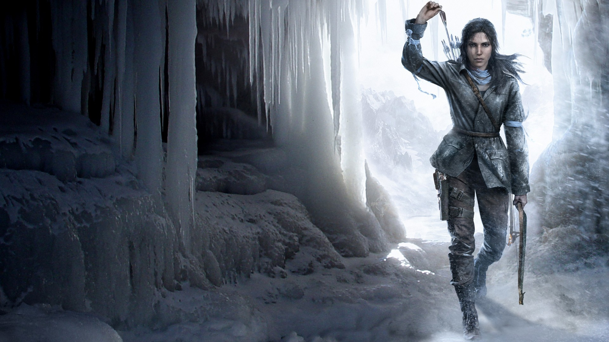
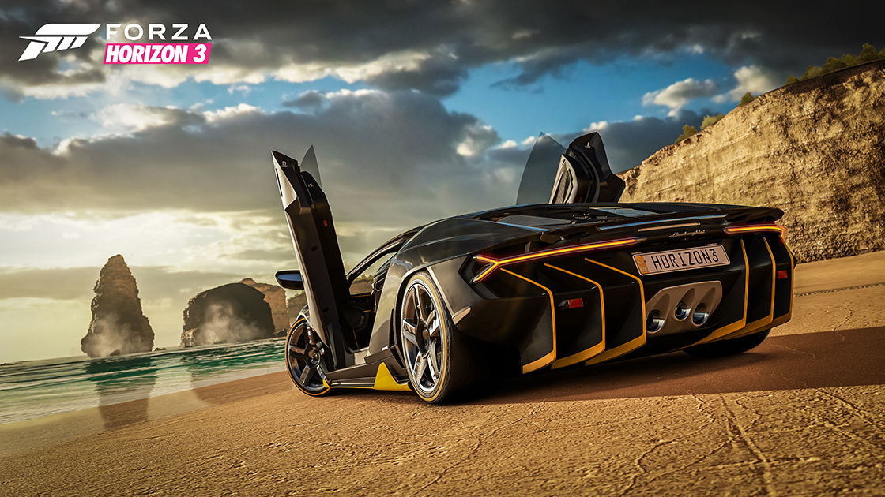

Recent PC Games
| The Witcher 3 |  |
The Witcher 3: Wild Hunt is an open world action role-playing video game developed by CD Projekt RED. Announced in February 2013, it was released worldwide for Microsoft Windows, PlayStation 4, and Xbox One on 19 May 2015. The game is the third in the series, preceded by The Witcher and The Witcher 2: Assassins of Kings, which are based on the series of fantasy novels by Polish author Andrzej Sapkowski |
|---|---|---|
| Rise Of Tomb Raider |  | Rise of the Tomb Raider is an action-adventure video game developed by Crystal Dynamics and published by Square Enix. It is the sequel to the 2013 video game Tomb Raider, a reboot of the Tomb Raider franchise. It was released for Xbox One and Xbox 360 in November 2015 and for Microsoft Windows in January 2016. It is set to release for the PlayStation 4 worldwide in October 2016 |
| Forza 3 |  | Forza Horizon 3 is an open world racing video game developed by Playground Games and published by Microsoft Studios for Xbox One and Microsoft Windows. The game features cross-platform play between the two platforms. The game was released on 23 September 2016 for "Ultimate Edition" players, and 27 September 2016 for standard and "Deluxe Edition" players. It is the third Forza Horizon and ninth instalment in the Forzaseries. Turn 10 Studios assisted Playground Games in the game's development. |